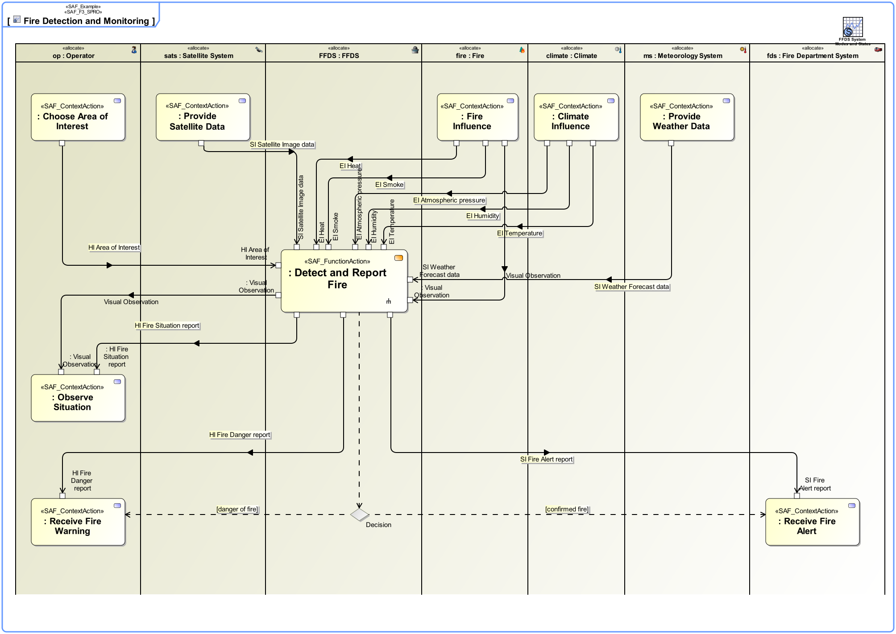
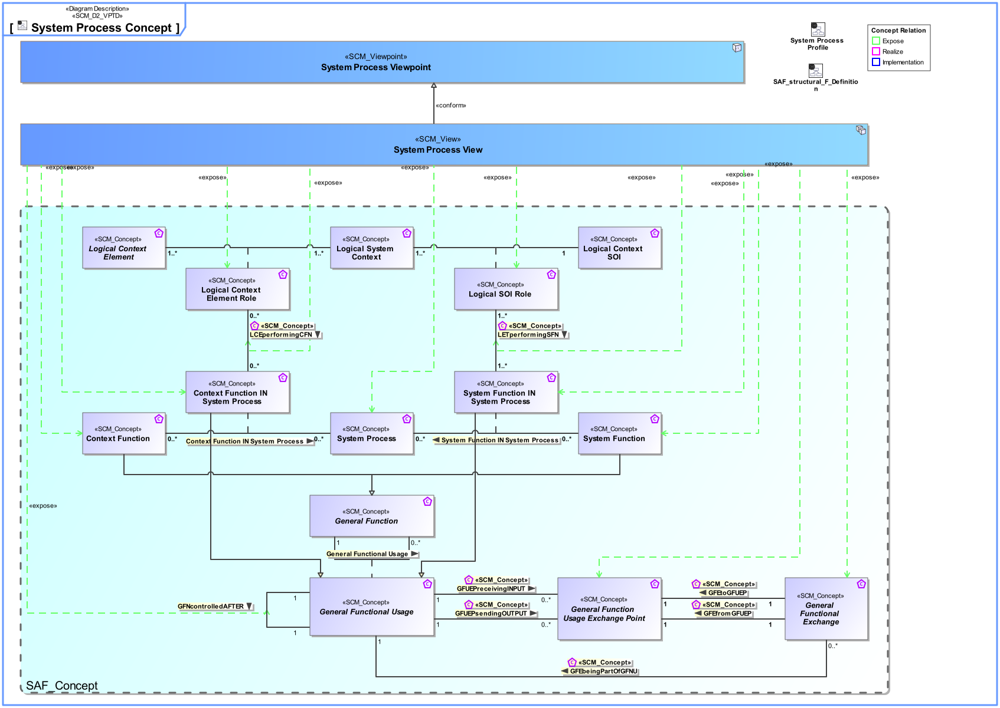
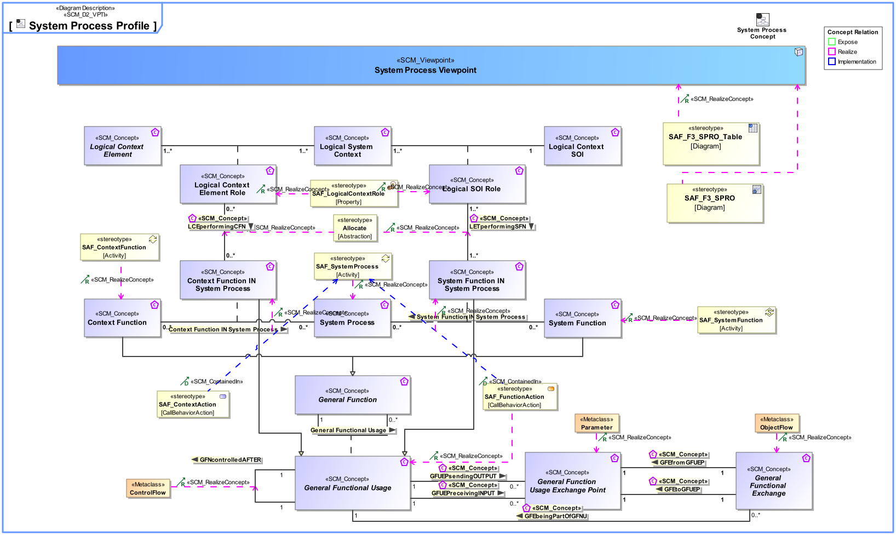

F3_SPRO System Process Viewpoint
| Domain | Aspect | Maturity |
|---|---|---|
| Functional | Process & Behavior |

The System Process Viewpoint provides the functional representation of the system using a black-box approach
The System Process Viewpoint supports the “System Requirements Definition Process” activities of the INCOSE SYSTEMS ENGINEERING HANDBOOK 2015 [§4.3] and contributes to the System Function, and the System Interface definition.
An activity diagram featuring the ordered execution of System Process Actions. The activity diagram swim lanes are typed with Context Element usage and SOI usage from the same System Context. Note: In order to improve the clarity of presentation it may be appropriate to use several activity diagrams for one System Process.
A tabular format listing all identified System Functions, the System Processes in which they appear, and the Comtext Exchange with the Context Functions.
The following Stereotypes / Model Elements are used in the Viewpoint:
The Diagram shows the concepts exposed by the viewpoint, and related concepts if necessary.

| Concept | Documentation |
|---|---|
| General Functional Exchange | Specifies the fact that an General Functional Exchange between General Function Parameters is taking place. |
| General Function Usage Exchange Point | A parameter of a System or Context Function. |
| GFNcontrolledAFTER | Specifies a sequential execution of Functions. |
| LCEperformingCFN | Specifies the fact that a Context Function is expected to be carried out by the Logical Context Element in this System Context. |
| LETperformingSFN | Specifies the fact that a System Function is expected to be carried out by the SOI in this System Context. |
| Logical Context Element Role | Specifies the fact that a Logical Context Element exists in a given Logical System Context. |
| Logical SOI Role | Specifies the fact that a Logical Context SOI exists in a given Logical System Context. |
| Context Function IN System Process | Specifies the fact that a Context Function is used in a System Process. |
| Context Function | Specifies the fact that a fundamental action or task is expected to be carried out by an External Entity. Note: The intention is to capture the expectations and to explicitly dissect the functionality. This must not be interpreted as an attempt for a behavior specification of an External Entity. Capturing this valuable information is the basis to reach agreement on the functionality at the System boundary by clarifying the expectations about what is performed by Context Elements. |
| System Function IN System Process | Specifies the fact that a System Function is used in a System Process. |
| System Function | Specifies the fundamental action or task that have to take place in the System in accepting and processing the inputs and in processing and generating the outputs. A System Function * accepts input from the System boundary * exposes its output at the System boundary * changes the System's State * is dependent on System's State Note: A System Function does not need to expose observable output, when it changes the System's state in a way that is observable by other system functions. Furthermore, a System Function does not need to accept any input from the system boundary, when it is dependent on the System State, which in turn is changeable by other System Functions. |
| System Process | Specifies the fact that a System Process captures system behavior as a specific sequence of actions or tasks, and system exchanges including information, materials, energy, etc. |
The Diagram shows the implementation of exposed concepts.
